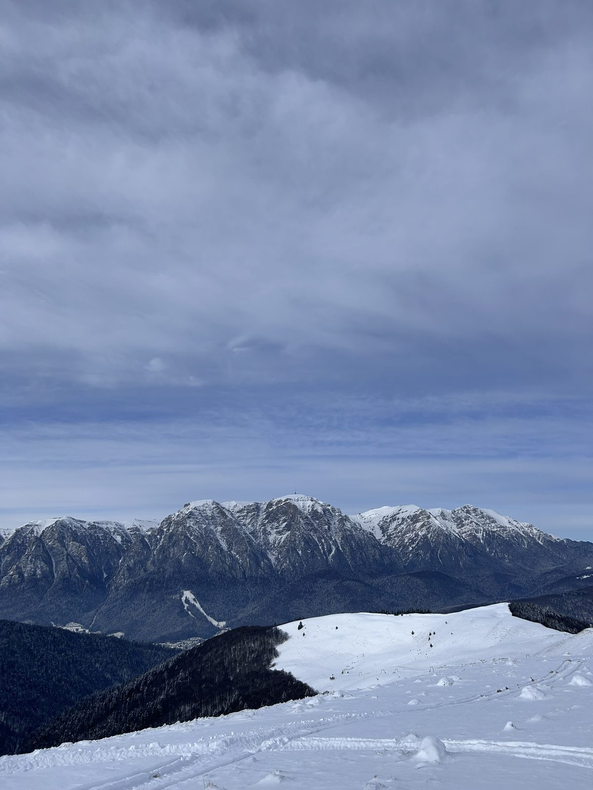
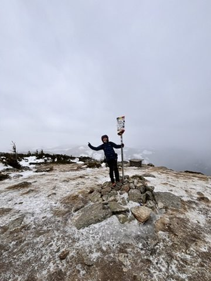
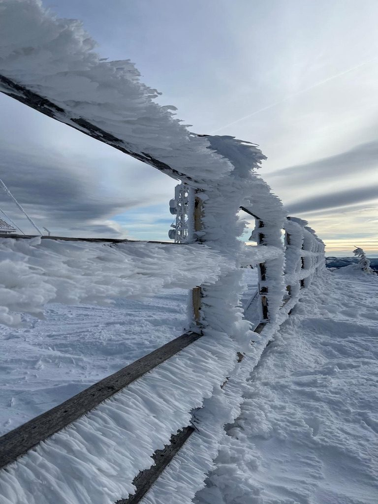
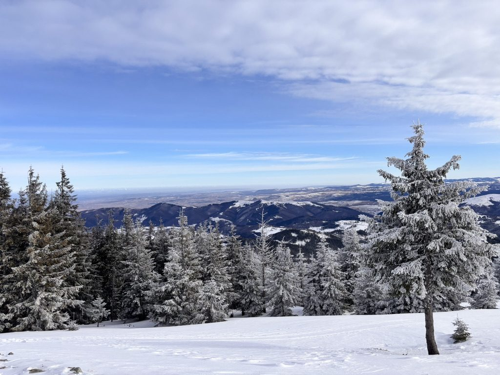
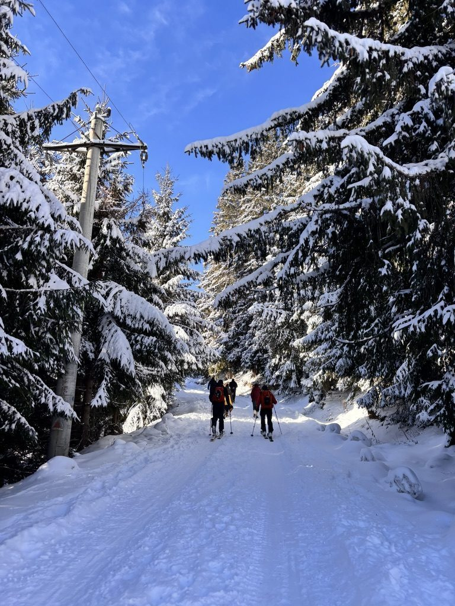
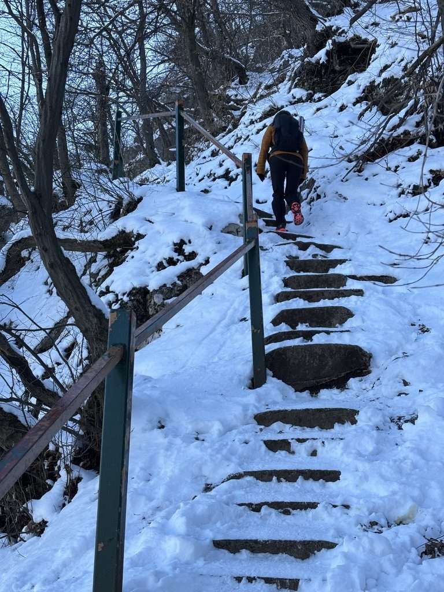

Most people put the mountains away in winter. The hiking crowd goes into hibernation, the trails empty out, and suddenly places that were crowded in September are completely yours. This is, in my view, the correct time to go.
Winter hiking in Romania means Vlădeasa in deep snow, frozen streams, ice on the trail where you least expect it, and the kind of silence that only exists when everything is muffled under white. It also means watching groups of skiers slide past you on the sunny meadow stretches and having a quiet internal conversation about whether you should get around to learning that at some point.

Somewhere in the mountains. Snow up to the knees in places.
Vlădeasa in winter

Frozen Vlădeasa. The trail markers are buried. You navigate by instinct and the ridge line.
Vlădeasa is different in winter. In summer and autumn it's the kind of mountain you can underestimate — rounded ridges, wide open terrain, nothing too technical. In winter the same terrain becomes something else. Snow buries the trail markers, the ground is uneven under the white, and the wind on the open ridge has opinions about where you're going.
I love it for exactly those reasons. The mountain asks more of you in winter. You have to pay attention in a way that summer hiking doesn't require. And the reward for that attention is a version of the place that very few people see.

The light in winter does things it doesn't do in any other season.
The light in winter is the thing. Low sun, long shadows, the blue-white of fresh snow in the afternoon. Everything is higher contrast. The photographs you take look like photographs you meant to take rather than snapshots.

I am a reasonable adult who definitely did not start jumping in the snow the moment nobody was watching.
The skier problem

Skiers are great. I don't do that yet. It's on the list.
On the lower slopes and in the broader mountain valleys, you share the winter landscape with skiers. Which is fine — skiers are good people, they're having a great time, the slopes look like a lot of fun. I watch them go past and feel genuinely happy for them.
I also look at the ski lift and think: that looks efficient. Walking uphill in snowshoes for two hours to get where a chairlift takes you in eight minutes is a choice you have to actively re-commit to every winter. I re-commit every winter. But the plan to eventually learn to ski is real and I am not dropping it.
Tampa Hill, Brașov

Tampa Hill, Brașov. Running this is optional. I make it mandatory.
Tampa Hill sits directly above Brașov's old town — a forested hill with a trail that goes steeply from the city centre to a viewpoint at 995 metres. It takes about 45 minutes to walk up. You can also run it, which is what I do, because the view from the top earns better when you've earned it badly.
In winter, with snow on the path and ice on the wooden steps, the ascent is more interesting. In summer this trail is full of locals on their evening walk. In January, on a weekday morning, you might have the whole thing to yourself. The city below, the mountains around it, and nobody else.
Brașov from above in winter looks like a city that knows what it's doing — old town compact and colourful, ringed by forest and peaks, the kind of place that was built with the landscape rather than against it. I always come down from Tampa feeling better about things than when I went up, which is the best thing you can say about any climb.
What you need
Winter hiking in the Romanian mountains is not technically extreme — most of what I do here is accessible to anyone reasonably fit who takes it seriously. Seriously means: microspikes or snowshoes depending on conditions, trekking poles, layers you can actually regulate, and the discipline to turn around if the weather changes. The Apuseni in a blizzard is not a place to be stubborn.
For Tampa Hill in Brașov, just waterproof shoes and a warm layer. The trail is groomed enough that it stays passable through the winter and the city is close enough to the bottom that the risk is low. It's a perfect morning warm-up before coffee and a pastry in the old town below.
Go in winter. More mountains for you.